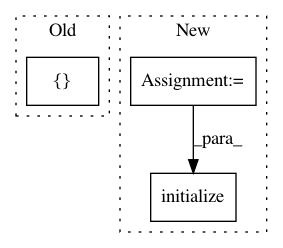

a7a12d157766b69cf4b1ddbb5fcdacfe485dc6fa,test/kernels/test_spectral_mixture_kernel.py,TestSpectralMixtureKernel,test_standard,#TestSpectralMixtureKernel#,10
Before Change
kernel = SpectralMixtureKernel(num_mixtures=2, ard_num_dims=2)
kernel.initialize(
mixture_weights=torch.tensor([[4, 2]], dtype=torch.float),
mixture_means=torch.tensor([[[[1, 2]], [[2, 1]]]], dtype=torch.float),
mixture_scales=torch.tensor([[[[0.5, 0.25]], [[0.25, 0.5]]]], dtype=torch.float),
)
kernel.eval()
After Change
a = torch.tensor([[0, 1], [2, 2], [2, 0]], dtype=torch.float)
means = torch.tensor([[1, 2], [2, 1]], dtype=torch.float)
scales = torch.tensor([[0.5, 0.25], [0.25, 0.5]], dtype=torch.float)
scales = scales.unsqueeze(1)
means = means.unsqueeze(1)
weights = torch.tensor([4, 2], dtype=torch.float)
kernel = SpectralMixtureKernel(num_mixtures=2, ard_num_dims=2)
kernel.initialize(
mixture_weights=weights,
mixture_means=means,
mixture_scales=scales,
)
kernel.eval()
actual = torch.zeros(2, 3, 3, 2)
for i in range(3):
In pattern: SUPERPATTERN
Frequency: 4
Non-data size: 3
Instances
Project Name: cornellius-gp/gpytorch
Commit Name: a7a12d157766b69cf4b1ddbb5fcdacfe485dc6fa
Time: 2019-04-03
Author: gpleiss@gmail.com
File Name: test/kernels/test_spectral_mixture_kernel.py
Class Name: TestSpectralMixtureKernel
Method Name: test_standard
Project Name: OpenNMT/OpenNMT-tf
Commit Name: b4984bf716560a3f5e71c0d5e35cf6b9bd99c211
Time: 2019-04-01
Author: guillaume.klein@systrangroup.com
File Name: opennmt/models/sequence_to_sequence.py
Class Name: SequenceToSequence
Method Name: _build
Project Name: shibing624/pycorrector
Commit Name: 5341cc169bcbd771cf2ea413424eb28f2431fe68
Time: 2019-12-20
Author: xuming624@qq.com
File Name: pycorrector/transformer/infer.py
Class Name:
Method Name:
Project Name: mil-tokyo/webdnn
Commit Name: c18345cb850eebf93477fa90f5d7a1f534527fae
Time: 2017-04-15
Author: y.kikura@gmail.com
File Name: src/graph_builder/backend/webgpu/operators/channelwise_bias.py
Class Name: ChannelwiseBias
Method Name: initialize